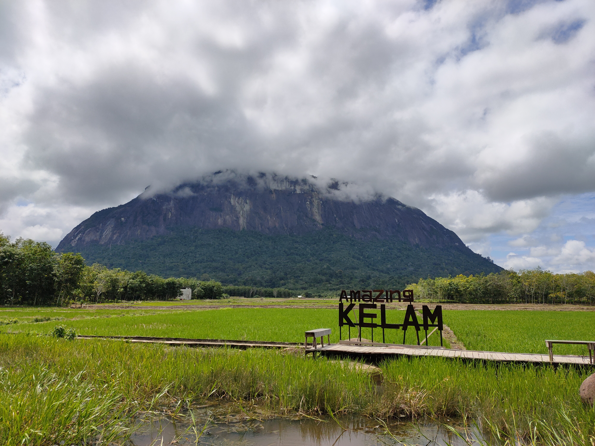

1st may, 2021
Danau Sentarum
Danau Sentarum adalah danau musiman yang berada di Kapuas Hulu, Kalimantan Barat. Danau
ini dipenuhi air selama 10 bulan setiap tahunnya, dan sisanya akan surut, membentuk kolam-kolam
kecil yang berisi ikan-ikan kecil. Saat kemarau, Air Danau Sentarum memasok setengah dari aliran air
Sungai Kapuas. Luas keseluruhan danau ini 132.000 Ha.
Pada tahun 1999, Danau Sentarum ditetapkan sebagai taman nasional. Sebelumnya, Taman
Nasional Danau Sentarum berstatus cagar alam pada 1981-1982 dan suaka margasatwa sejak 1983.
1st may, 2021
Pulau Lemukutan
Pulau Lemukutan adalah sebuah pulau yang secara administratif terletak di Kecamatan
Sungai Raya Kepulauan, Kabupaten Bengkayang, Provinsi Kalimantan Barat. Saya memulai perjalanan
menuju Pulau Lemukutan dari Pontianak menggunakan mobil menuju ke dermaga penyeberangan yang
berjarak sekitar 130 Km dengan waktu tempuh sekitar tiga setengah jam. Sesampainya di dermaga
terlihat kapal-kapal kayu sederhana yang digunakan untuk mengangkut orang maupun barang dari dan
menuju ke Pulau Lemukutan.
Perjalanan dari dermaga menuju ke Pulau Lemukutan memakan waktu sekitar satu jam.
Sepanjang perjalanan, kita disuguhi dengan pemandangan pulau-pulau eksotik yang menggugah rasa
penasaran karena sebagian besar pulau tersebut tidak berpenduduk. Hembusan angin khas lautan
diiringi dengan hempasan ombak kecil membuat kita seolah-olah tidak percaya masih berada di
Kalimantan Barat yang lebih dikenal dengan kekayaan alam berupa hutan dan sungai.
1st may, 2021
Pantai Batu Nenek
Pantai Batu Nenek merupakan satu diantara gugusan pantai yang ada di sepanjang wilayah
pesisir Temajuk, Paloh, Kabupaten Sambas, Kalimantan Barat. Pantai Batu Nenek merupakan pantai yang
tidak hanya dipenuhi hamparan pasir, namun juga dipenuhi hamparan batu karang yang tajam.
Waktu yang tepat untuk bersantai di Pantai Batu Nenek adalah saat air laut sedang surut.
Karena saat air surut pengunjung dapat berjalan kaki menuju ke lokasi Batu Nenek.
1st may, 2021
Gunung Palung National Park
Taman Nasional Gunung Palung (TNGP) adalah taman nasional yang terletak di Kabupaten
Kayong Utara dan Kabupaten Ketapang, Kalimantan Barat.
TNGP mempunyai ekosistem yang dikatakan sebagai yang terlengkap di antara taman-taman
nasional di Indonesia. Di kawasannya terdapat Gunung Palung yang mempunyai ketinggian 1.116 meter.
Selain itu, TNGP juga adalah habitat bagi sekira 2.500 ekor orangutan. Bekantan adalah mamalia
dengan jumlah terbesar di TNGP.Juga terdapat fauna langka, yaitu Kijang Mini. Kijang mini adalah
salah satu hewan yang hanya ada di kawasan ini.

1st may, 2021
Mimi Land Batu Payung
Wisata keluarga Mimi Land Beach adalah ikonnya Singkawang sebagai salah satu daerah yang
ditetapkan sebagai kota wisata di Kalimantan Barat. Jejeran tenda-tenda dipinggir pantai serta
berbagai wahana permainan seru selalu terisi penuh saat liburan tiba. Inilah penyebabnya mengapa
Mimi Land Beach layak dijadikan sebagai tujuan wisata di Kalimantan Barat.
Wisata favorit di Singkawang ini memiliki pantai yang pasirnya putih dengan deretan
landai serta sajian pemandangan yang memukau. Daya tarik destinasi wisata ini banyak menarik
perhatian orang dewasa hingga anak-anak. Disana pengunjung akan disuguhkan dengan pemandangan alam
yang begitu memukau, spot-spot foto yang sangat fantastis dan suasana sekitar dengan semilir angin
laut bertiup sejuk, sangat cocok menemani pengunjung menikmati momen berlibur bersama keluarga
tercinta.
1st may, 2021
Taman Nasional Betung Karihun
Taman Nasional Betung Kerihun (sebelumnya Gunung Bentuang) adalah taman nasional yang
terletak di provinsi Kalimantan Barat, Indonesia. Taman nasional ini didirikan pada tahun 1992, dan
memiliki wilayah seluas 8.000 km² (3.100 mil²). Bersama dengan Lanjak Entimau di Malaysia, taman
nasional ini telah diusulkan menjadi Situs Warisan Dunia UNESCO.
Waktu yang tepat untuk bersantai di Pantai Batu Nenek adalah saat air laut sedang surut.
Karena saat air surut pengunjung dapat berjalan kaki menuju ke lokasi Batu Nenek.

1st may, 2021
Bukit Kelam
Gunung Kelam adalah gunung yang terletak di Kalimantan Barat. Gunung ini memiliki
tanaman endemik kantong semar dari spesies Nepenthes clipeata. Gunung Kelam membentang dari barat ke
timur dengan ketinggian 1.002 mdpl merupakan sebongkah batu raksasa (monolit). Tempat ini terletak
20 km dari kota Sintang dan sekitar 395 km dari Pontianak ibu kota Kalimantan Barat. Kawasan Gunung
Kelam berada di wilayah Kecamatan Kelam Permai kabupaten Sintang Kalimantan Barat. Tepatnya di Hutan
wisata Bukit Kelam. Bukit Kelam berada di antara dua sungai besar yaitu Sungai Melawi dan Sungai
Kapuas.
Masyarakat di Kalimantan menyebut Gunung Kelam sebagai Bukit Kelam karena secara umum
masyarakat setempat menyebut gunung sebagai "bukit raya". Untuk pendakian mencapai puncak dibutuhkan
waktu 4-5 jam untuk naik dan 3-4 jam untuk turun.
1st may, 2021
Air Terjun Pancur Aji
Pancur Aji adalah sebuah kawasan perbukitan yang terletak di pinggiran teluk Sungai Kapuas di bagian
hilir / pesisir barat Kota Sanggau, kawasan ini diapit oleh dua buah anak sungai yakni Sungai Monga
di bagian hilir dan Sungai Mawang di bagian hulu, kedua sungai ini bermuara ke Sungai Kapuas. Pada
muara Sungai Monga terdapat air terjun yang dinamakan Gurong Monga, yang konon menurut cerita rakyat
terutama masyarakat sekitar Gurong Monga, tempat ini adalah tempat pertapaan orang ghaib dan dihuni
oleh makhluk-makhluk halus.
Ketinggian tiga air terjun di kawasan ini hanya sekitar empat sampai lima meter. Namun
derasnya air dari masing-masing ketinggiannya memberikan sensasi seakan menikmati indahnya air
terjun Niagara, air terjun besar di sungai Niagara, Kanada.
1st may, 2021
Pulau Randayan
Inilah salah satu surga keindahan yang ada di Kalimantan Barat. Sebuah pulau sepi yang
memiliki pasir putih dengan pemandangan eksotis khas pulau pribadi. Inilah Pulau Randayan, pulau
yang terletak di sebelah utara daerah pesisir Kalimantan Barat.
Menginjakan kaki di Pulau Randayan kita seperti dimanjakan dengan alam yang sangat
indah. Selain pantainya yang berpasir putih, air pantai yang bening dan pemandangan laut lepas yang
eksotis menjadi daya tarik tersendiri dari pulau ini.
1st may, 2021
Pantai Tanjung Bajau
Tanjung bajau adalah tempat wisata yang baru saja dibuka untuk umum. Tanjung Bajau atau
biasa disebut Rindu alam ini terletak di Kota Singkawang. Rindu Alam hanya berjarak 18 km dari
wisata Pasir Panjang dan Palm Beach, objek wisata alam yang sudah sangat terkenal di Kalimantan
Barat. Lokasinya terletak diantara Gunung Bajau, Gunung kota dan Gunung Pelapis. Rindu alam berada
pada ketinggian sekitar 400m dari permukaan laut.
Untuk mencapainya, setiap pengunjung akan dikenakan tiket masuk sebesar Rp. 10.000 per
orang. Pengunjung juga harus melalui jalanan panjang yang berkelok-kelok sebelum mencapai puncak
taman ini. Tapi jangan khawatir, karena kini jalanan yang membentang sudah mulus akibat sentuhan
pembangunan yang sangat memanjakan objek wisata ini.